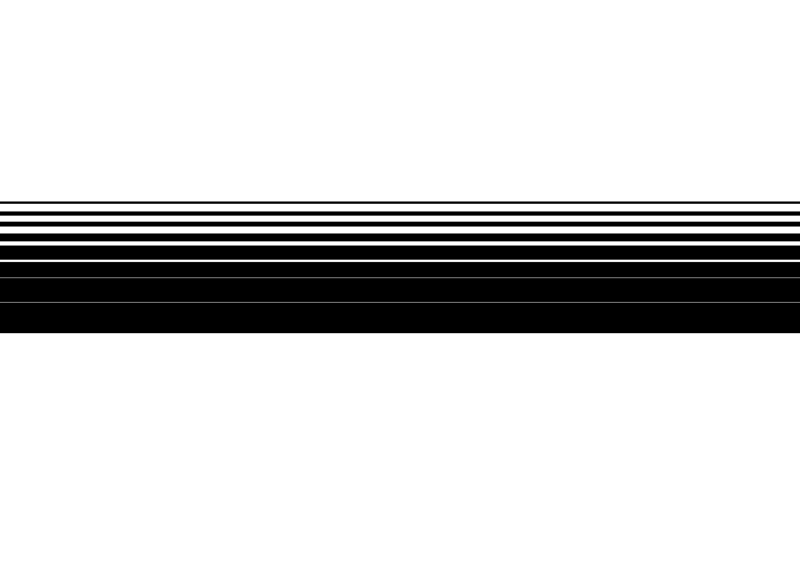
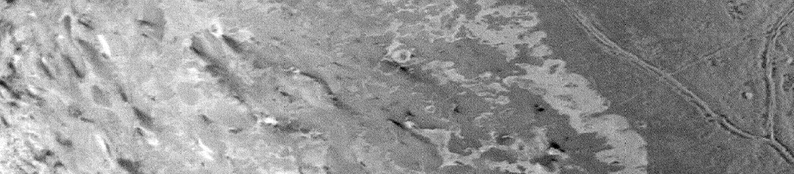
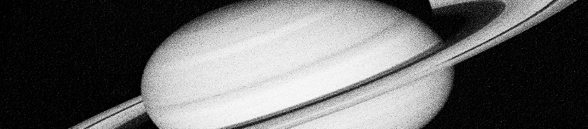

ABOUT
Astronomy Picture of the Day (APOD) is originated, written, coordinated, and edited since 1995 by Robert Nemiroff and Jerry Bonnell.
The APOD archive contains the largest collection of annotated astronomical images on the internet. Space Beyond Earth compilates images directly from the website that collectively communicates a different story and discovery.
STORY
Light pollution has long troubled astronomers, who generally shy away from deep sky observing under full Moon skies. The natural light from a bright Moon floods the sky and hides views of the Milky Way, dim galaxies and nebula, and shooting stars. In recent years human-made light pollution has dramatically surpassed the interference of even a bright full Moon, and its effects are now noticeable to a great many people outside of the astronomical community.
Harsh, bright white LED streetlights, while often more efficient and long-lasting, often creates unexcted problems for communities replacing their old street lamps. Increased glare and light trespass, less restful sleep, and disturbed nocturnal wildlife patterns are some notable concerns. There is increasing awareness of just how much light is too much light at night. You don't need to give in to despair over encroaching light pollution; you can join efforts to measure it, educate others, and even help stop or reduce the effects of light pollution in your community.
Confidential



NGC 6188: The Dragons of Ara - 25/02/18
Explanation: For 55 consecutive nights Mediterranean skies were at least partly clear this summer, from the 1st of July to the 24th of August 2018. An exposure from each night was incorporated in this composited telephoto and telescopic image to follow bright planet Saturn as it wandered through the generous evening skies

Dark shapes with bright edges winging their way through dusty NGC 6188 are tens of light-years long. The emission nebula is found near the edge of an otherwise dark large molecular cloud in the southern constellation Ara, about 4,000 light-years away.
NGC 1499: The California Nebula - 07/11/18
Dark shapes with bright edges winging their way through dusty NGC 6188 are tens of light-years long. The emission nebula is found near the edge of an otherwise dark large molecular cloud in the southern constellation Ara, about 4,000 light-years away.

How complex is Jupiter? NASA's Juno mission to Jupiter is finding the Jovian giant to be more complicated than expected. Jupiter's magnetic field has been discovered to be much different from our Earth's simple dipole field, showing several poles embedded in a complicated network more convoluted in the north than the south. Further, Juno's radio measurements show that Jupiter's atmosphere shows structure well below the upper cloud deck -- even hundreds of kilometers deep.
Complex Jupiter - 06/11/17
How complex is Jupiter? NASA's Juno mission to Jupiter is finding the Jovian giant to be more complicated than expected. Jupiter's magnetic field has been discovered to be much different from our Earth's simple dipole field, showing several poles embedded in a complicated network more convoluted in the north than the south. Further, Juno's radio measurements show that Jupiter's atmosphere shows structure well below the upper cloud deck -- even hundreds of kilometers deep.